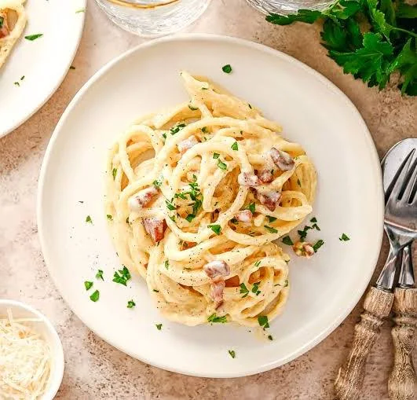

Pasta Carbonara

Pasta Carbonara is a classic Italian dish made with eggs, cheese, pancetta, and spaghetti.
Pasta carbonara is a dish made with pasta, eggs, hard cheese, cured pork, and black pepper. It is
famous for its rich, velvety sauce created entirely by emulsifying eggs, grated cheese, and starchy pasta
water—without using any heavy cream.
Ingredients:
- 200g spaghetti
- 100g pancetta
- 2 large eggs
- 50g pecorino cheese, grated
- 50g parmesan cheese, grated
- 2 cloves garlic, peeled and left whole
- Salt and black pepper to taste
Steps:
- Cook the spaghetti in a large pot of boiling salted water until al dente.
- While the pasta is cooking, fry the pancetta with the garlic until crispy. Remove the garlic and discard.
- In a bowl, beat the eggs and mix in the grated cheeses.
- Drain the pasta and return it to the pot. Quickly add the pancetta and egg mixture, tossing everything
together off the heat to avoid scrambling the eggs.
- Season with salt and black pepper to taste. Serve immediately.